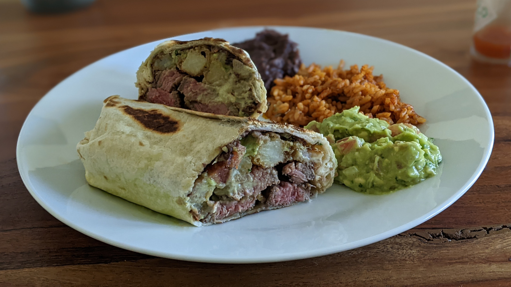

California Burrito

Author: Derek Nichols |
Cooked: March 26, 2022
Yields: 4 Servings | Prep Time: 15 Minutes | Cook Time: 60 Minutes
Ingredients
- 2 1/2 Tbs soy sauce
- 1/4 c. olive oil
- 2 1/2 Tbs lemon juice
- 2 Tbs Worcestershire sauce
- 1 Tbs garlic powder
- 1 1/2 Tbs dried basil
- 1 Tbs dried parsley
- 1/2 tsp ground white pepper
- 1/4 tsp hot sauce
- 1/2 tsp minced garlic
- 1.5 lb steak (skirt steak or sirloin) --------------------------
- 12" flour tortillas
- 1 can refried beans
- Guacamole
- Sour cream
- French fries
- Steak
- Shredded cheese
Steak Marinade
Burrito
Directions
- Place the marinade ingredients into a blender and blend on high speed for 30 seconds until thoroughly mixed.
- Pour over meat and refrigerate for 2 hours. --------------------------
Steak Marinade
- Prepare fries.
- Cook steak to desired temperature. While steak cooks, heat up refried beans in a pan.
- Take a tortilla, and on an off-centered portion of the tortilla, add layer of refried beans, guacamole, sour cream, fries, steak, and cheese. Wrap up burrito and place on pan over medium heat. Cook on both sides until tortilla toasts slightly.
Burrito
Additional Notes
- The three key ingredients to a California burrito are steak, guacamole, and french fries. The other fill-ins are up to the creator's discretion. We used refried black beans, sour cream, and cheese. Salsa, lettuce, tomatoes, hot sauce, or sriracha would also work well!
- We used sirloin, but a skirt steak would work just as well.
- We made beer-battered french fries for these, but that was probably overkill and doesn't give those fries the proper treatment they deserve. The fries get soggy in the burrito meaning the potato itself is all that comes through. For that reason, frozen fries would work just as well and would be much easier.